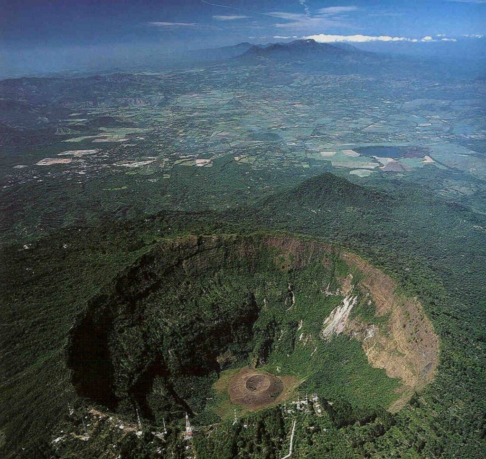
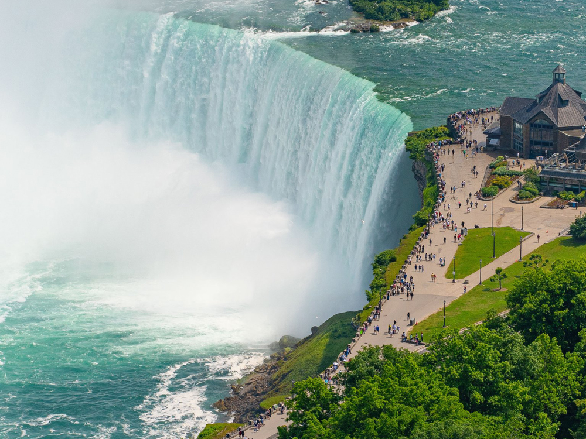

La Mejor Agencia de Viajes
Escoge tu prroximo destino para ir con tus aventuras
Visita este lugar increible, ven al boqueron al lugar donde tu si puedes disfrutar del paisaje, con vistas a todo San Salvador, clima fresco y un agradable paisaje, para tener un momento tranquilo, fresco, y acogedor
Francia, en Europa Occidental, abarca ciudades medievales, villas alpinas y playas mediterráneas. París, su capital, es famosa por sus firmas de alta costura, los museos de arte clásico, como el Louvre, y monumentos como la Torre Eiffel. El país también es reconocido por sus vinos y su gastronomía sofisticada. Los dibujos de la antigua cueva de Lascaux, el teatro romano de Lyon y el imponente Palacio de Versalles dan fe de su rica historia.

Las Cataratas del Niágara es una ciudad ubicada en el sur de Ontario, Canadá. La atracción principal son, por supuesto, las Cataratas del Niágara, una serie de tres cascadas separadas que incluyen las icónicas Cataratas Horseshoe, ampliamente consideradas como una maravilla natural del mundo.
